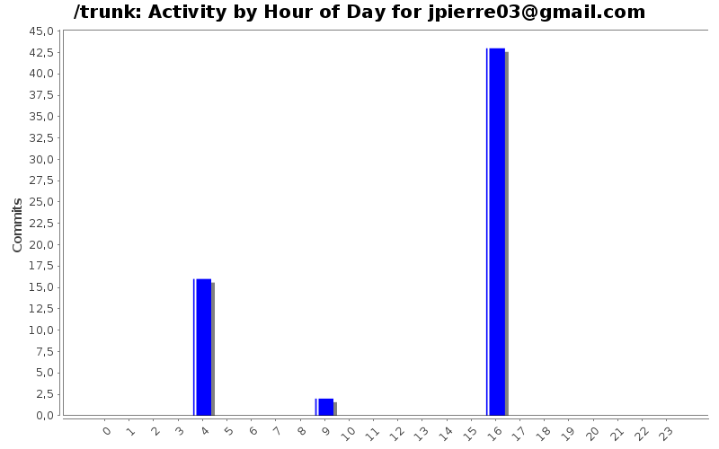
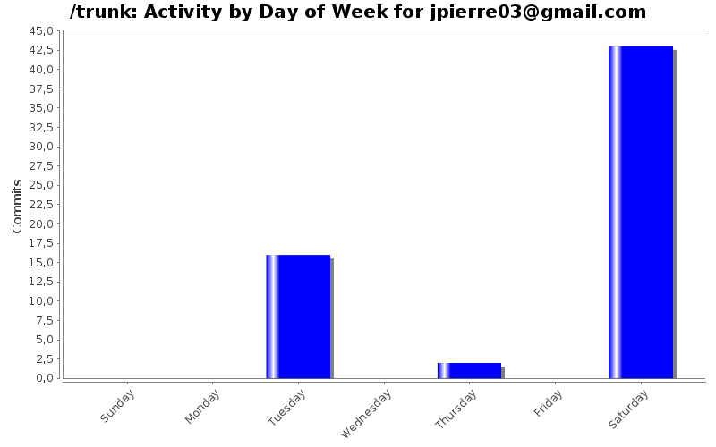
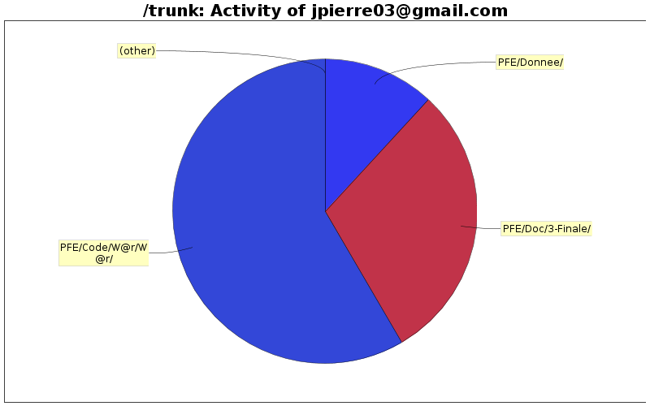

| Directory | Changes | Lines of Code | Lines per Change |
|---|---|---|---|
| Totals | 61 (100.0%) | 1066 (100.0%) | 17.4 |
| PFE/Code/W@r/W@r/ | 36 (59.0%) | 623 (58.4%) | 17.3 |
| PFE/Doc/3-Finale/ | 1 (1.6%) | 316 (29.6%) | 316.0 |
| PFE/Donnee/ | 4 (6.6%) | 127 (11.9%) | 31.7 |
| PFE/Code/W@r/W@r/Debug/ | 16 (26.2%) | 0 (0.0%) | 0.0 |
| PFE/Code/W@r/ | 4 (6.6%) | 0 (0.0%) | 0.0 |

- Destruction du projet Visual Studio en C++
(vu qu'il existe aussi sous netbeans)
(cela m'a été demmandé, car les caractères spéciaux font que c'est la galère à modifier)
Solution: à partir de la racine du dépot, svn rm --force Code/W@r
car lorsque l'on est dans le même répertoire svn considère cela comme un dossier (W) à la révision r.
Et donc ça marche pô
0 lines of code changed in 40 files:
+ changement de l'entête des données pour mieux comprendre
garciaf & jpierre03
26 lines of code changed in 2 files:
+ relecture + commentaire & suggestions
(pas taper, cela m'a été demmandé)
316 lines of code changed in 1 file:
+ renommage (fichiers, en-tete de fichiers)
+ création d'une version courte pour tester
101 lines of code changed in 2 files:
[découverte du C++ --> j'ai jeté un oeil pour voir à quoi ça ressemble]
- suppression des librairies non c++ pur
(conio.h, dos.h, que j'ai pas sur ma machine, et qui servaient pas)
--> compile et s'xecute bien avec gcc (gratuit et fournis avec GNU/Linux :)
--> après une légère manip, le code s'intègre bien à netbeans
manip : créer un nouveau projet c++
lorsque c'est fait : ajouter aux sources "Existing Items from folder"
et le tour est joué.
+ ajout d'une license de code (GLP3).
Car en l'absence de code : c'est le bo**el pour savoir qui est possesseur du code
surtout sur un dépôt public (comme l'est google code)
-+ transformation en anglais
* Tracalibite --> Tracability
* Machine --> WorkStation
PS : Oh, une contribution externe sur un projet open-source naissant !
623 lines of code changed in 16 files: